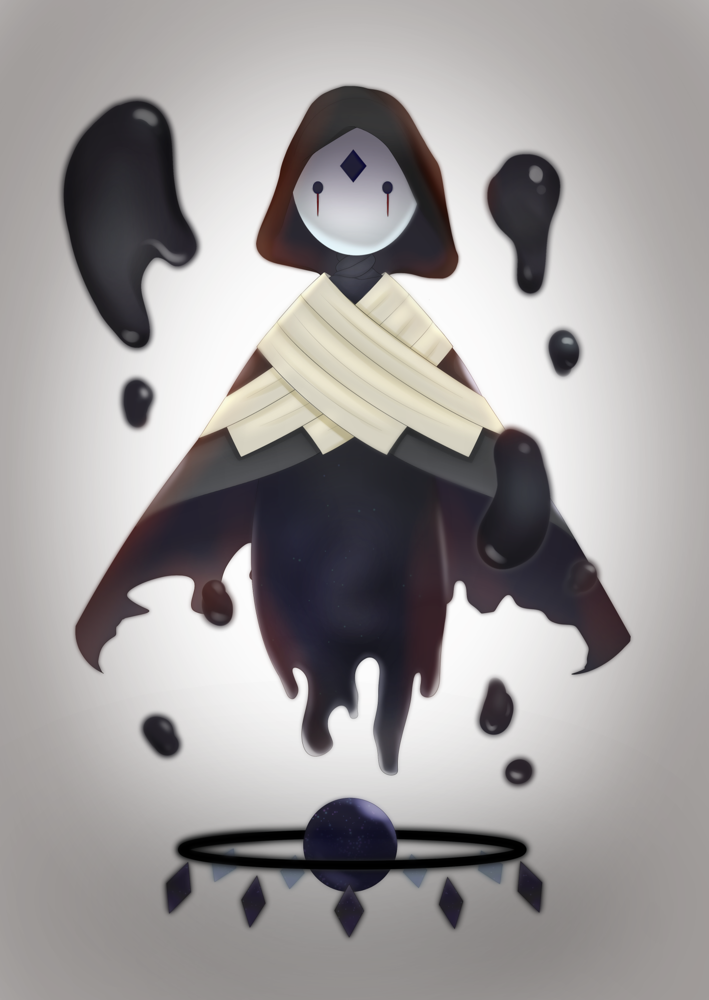

何とも仰々しい名を冠したこの協会は、今から二百五十年余り前に設立されて以来、現在に至るまで、大陸中の統治を一手に担っている巨大な組織だ。
元は国々の繋がりを強固にし、様々な技術や情報等を共有することで、世界の更なる発展を目指す……という理念から発足した『同盟』が前身で、この同盟が締結(ていけつ)されるに伴い、世界は少しずつ、けれど大きく変わっていった。
科学や医療の技術はめざましい進歩を遂げ、忘れられた技術が復元し、より洗練された法の整備が行われ、紀年法も変わり……他にもあらゆる方面から、人々の暮らしに影響を与えた。
各地の地域性・特色は残したまま、そうやって世界は一つに纏まっていった。
そして、この管理協会による『一体性』が、あるときから人類に大きく貢献することになる。
現在から七十年弱ほど遡(さかのぼ)り、一八八年頃から突如として現れた『脅威』。
――テネブレ。
古い言葉で『闇』を意味する名を冠したこの異形は、常人では到底太刀打ちできず、人類は一方的に襲われ、その数と生息圏を減らしていくことになった。
しかし、それによって各国が形を維持できなくなった後も、人々の暮らしがさほど崩壊していないのは、管理協会が『同盟』から世界を纏める『統治機構』へと変わっていったからだ。
最初はどの国にも属さない中立地域として、管理協会が試験的に建てた十二の都市も、今や分厚い壁を築き上げ、生き残った人々が逃げ込む『最後の砦』となっている。
壁に囲まれ、中央には管理協会の塔を設けた、城塞都市の中。
今日も人々は生きている。
1
ルークシア大陸の中心、管理協会本部のある『リーブラダム』でのこと。
それは、太陽がはるか西側へと傾(かたむ)く頃だった。
降り注ぐ斜陽(しゃよう)は眩しくて、ビルの壁に遮られても、その明るさを損(そこ)なうことはない。
その光は、都市の中央に位置する巨大な建物――協会本部の内側にまで差し込んで、廊下を行き交う人々は皆一様に目を細めている。
長い黒髪の少女――夜見川(よみかわ)茜(あかね)もまた、そういった人影の一つとなって歩いていた。
けれど、彼女が伏し目がちになっているのは、眩しさだけが理由ではない。
名の由来にもなった茜色の瞳には憂(うれ)いが滲(にじ)んで、己の髪を弄る指先は少しばかり落ち着きに欠ける。加えて足取りの重さが、目的地へ辿り着くことを拒(こば)んでいると暗に語っていた。
「……はぁ」
気を抜くと、彼女の口からはすぐ溜息(ためいき)が漏れてしまう。
そんな自分の声を聞いてまた憂鬱(ゆううつ)になって……の悪循環を彼女は何度繰り返したことだろう。
確かに茜は、自身が現在向かっている場所に対してあまり良い感情を持っていない。
けれど、その感情にもこれといった理由がない、というのが、余計に彼女の気分を沈ませる要因となっていた。
彼女が向かっているのは、ビサニマプロジェクトの技術部区画にある一角だ。
技術部区画は、主にビサニマ達の素体開発や中身となる魂についての研究など――その名の通り専門技術に関する業務を担う場所で、茜達ビサニマが初めて『|起動す(めざめ)る』場所でもある。
つまり人々を守るための重要な施設だし、茜が拒否感を抱く理由もない。
それに対して『行かなければならない理由』の方はしっかりあるのに、行きたくないなんてワガママを通せるような強い精神は……茜は持ち合わせていなかった。
だから行くのをギリギリまで引き延ばしたり、歩みを遅くしたりはしても、進むことだけは止められない。
けれど……廊下の窓から見える景色が、茜の目覚めた日と似ているからだろうか。
彼女は、つい色々なことを思い出してしまう。
「あのカプセル……」
茜の口から、不意に漏れる呟き。しかし、その続きが声になることはない。
だってそれは、あまりにも縁起が悪い言葉だったから。
|自分ら(ビサニマ)の入っていた機械が『まるで棺(ひつぎ)みたい』だなんて……たとえ、ビサニマが一度死んだ存在だったとしても、口に出すのはどうにも憚(はばか)られた。
だが一つ思い出してしまえば、次々と色んなことが頭を過ってしまう。
部屋を埋め尽くす白も、茜を起動したあの『特殊な女性職員』のことも……それらを染める今日と似た夕陽の色も。
それこそあのとき説明された、自身らの『義務』について、あるいは起動してすぐ自覚した自身の『能力(メモリア)』のことだって――……。
だから、これ以上嫌なことを考えてしまう前に……と茜は頭(かぶり)を振った。
代わりに思い浮かべるのは、いつもと同じことだ。
こうやって落ち込んだとき、茜はよく『あの子』ならどうするのだろう、と考える。
真っ直ぐで、明るくて、お星さまが大好きな……とあるビサニマの少女のことだ。
茜と年齢も近く、ここに入った時期も似たその少女は、内気な茜を笑顔にしてくれる貴重な友人の一人だった。
こんなとき、彼女が来てくれたなら……。
「――あっ！ 茜ちゃんっ」
「えっ……？」
そう、こんな風に……とまで考えたところで、茜は目を見開いた。
茜の背後から聞こえた明るく弾む声。それは茜にとって非常に聞き慣れた……それどころか今しがた彼女が思い浮かべていた少女の声そのものだ。
あまりにタイミングが良いものだから、彼女が驚(おどろ)いてしまうのも無理はなかった。
茜が足を止めた途端、その後ろでタタッと軽い足音が響(ひび)く。
それから茜が振り向くのも待たず、足音の主はは茜のすぐ右隣へと躍(おど)り出た。
「えへへ、こんにちは！ 茜ちゃんっ」
茜の視界の端で、星が瞬(またた)く。
星を模(かたど)ったアクセサリー。夜空のような青みがかった黒髪に、きらきら輝く大きな金の瞳。
エトワール・ギルバートが、そこに居た。
「……うん、こんにちは。エト」
一拍。僅かな間を置いて、茜はふっと頬を緩ませて、彼女の愛称を呼んだ。
嬉しそうに笑みを咲かせるエトワールは、きっと今日も楽しいことに満ちた時間を過ごしたのだろう。そんなことを考えて、茜は自然と笑みをこぼす。
それに対するエトワールはと言えば「あ、そうそう」とやや唐突に話を切り出した。
「ねね。茜ちゃんって、今から『定期検診』に行くとこだったりする？」
僅かな期待を込めた眼差しと声音に、茜は一度ぱちくりと目を瞬くと、小さく頷いた。
「え……っと、うん。そうだよ」
基本、ビサニマにはいくつかの『義務』が課されている。エトワールの言う『定期検診』も、その内の一つだ。
ビサニマの身体の損耗具合や精神状況、そして『核』の状態といった様々な情報を、やはり様々な検査を通して調べ、異常があれば個々に合わせたケアを行う、定期的な|健康診断(てんけん・せいび)。
これによってビサニマ達の状態を常に万全に保つことができるのだ。
――今日は丁度、二人が定期検診を受ける日だった。
「……もしかして、エトも今から行くところ？」
ふと、茜は何となしに問い返してみた。こんな日に、ここに居るということは……と、そう思い当たっての問いだった。
もしも違ったら、自身と同じにしてしまって申し訳ないな、と心の隅で思いながら。
だが、そんな茜の心配は杞憂に終わったようだった。
茜に尋ねられると、エトワールは途端にぱぁっと笑顔を輝かせて、大きく頷いてみせた。
「うん、そう、そうなのっ！ それで、茜ちゃんを見つけてね……？」
――一緒に行きたいなって思ったんだ。
そう言いながら、エトワールの表情は恥じらうような微笑みに変わる。
次いで照れを誤魔化すように人差し指で頬を掻いて「駄目かな」と尋ねる彼女を、茜が断ることなどできなかった。
勿論、この貴重な友人を断る理由なんてないけれど。
「エトが良いなら、是非」
それどころか、一人でこのモヤモヤを抱えているよりも、彼女といた方がよっぽど良かった。
「ほんとっ？ やったぁ！」
色よい返事を受けたエトワールが、嬉しそうに声を上げる。
それから彼女は、どこかわくわくした様子で、茜にぱっと左手を差し出した。
「じゃ、一緒に行こ？ 茜ちゃんっ」
茜は一瞬、その手の意味を理解できなくて、きょとんと首を傾げてしまう。
けれど縋るように見た先、エトワールの顔に満ちた期待を受けて……何となく理解した。
「そうだね。行こっか――エト」
言って、茜はそっと彼女の手に自身の右手を重ねる。緩く力を込めると握り返される感触に、何とも言えないくすぐったさを感じてしまう。
それからエトワールが僅かに引っ張るのを合図に、二人は共に歩きだした。
たったそれだけ。それだけのことで、茜は何故だか少しだけ……胸中を支配していた重さが薄れたような気になってしまう。
いつだって……エトワールは『そういう子』だった。
エトワールと茜が出会ったのは、今から数ヶ月前、茜がビサニマとなってすぐのことだった。
茜が職員に連れられて協会内部を案内されていたときに、廊下を散歩していたエトワールと偶然鉢合わせたのだ。
一ヶ月ほど先にビサニマになったというエトワールは、そのときにはもう今と同じくらいの輝きを纏っていて、来たばかりの茜にも人懐っこく話しかけてきた。
最初は、右も左も分からないまま知らない人に話しかけられている、という状況も相まって、茜もその勢いに圧倒されてしまった。けれど気付いたときにはエトワールの底抜けな明るさにつられて、すっかり打ち解けてしまっていたのを、茜はよく覚えている。
その後、茜の案内に付き添うこととなったエトワールが、行く先々で人々に声をかけられていたことも、そこからエトワールの人柄を何となく察したことまでも。
けれど茜は、いつも不思議に思っていることがあった。
「エトは、さ……」
「んん～？ なぁに？」
「その……ううん、やっぱ何でもない」
茜が問おうとした言葉は、すんでのところで飲み込まれてしまう。
何となく、茜は聞くのが怖くなってしまったからだ。
――エトワールは不安にならないのか。その問いの答えを知るのが、怖かった。
「えぇ～っ、気になるなぁ～っ」
思わせぶりな言葉に不服げな隣の少女を横目に、茜は考える。
茜とエトワールは同じ『ビサニマ』だ。しかもタイプＢという点まで共通している。
普通の人であれば、記憶がないことや一度死んでいること、|メモリアの由来(せいぜんのねがい)とか……あとは自身らに課された義務だとかで、多少なりとも不安を抱くものだろう。
それらは生活する上で徐々に解消されていくとは言えど、そう簡単に不安を捨て去ることはできないはずだ。それこそ茜達のような、まだ若く、精神が未熟な者であれば尚更(なおさら)だ。
なのに、このエトワールからはそんな暗さなど微塵(みじん)も感じられなくて、それどころか近くに居るだけで悩みも吹き飛んでしまうような『眩しさ』すら放っている。
どんな人ともすぐに打ち解けて笑顔をくれるこの少女が、一部の人達から『みんなの星』と呼ばれているのも容易(ようい)に納得(なっとく)できた。
本当に、内気な自身とは大違いだ……と、茜は胸中でひとりごちる。
茜もエトワールから元気をもらっている一人ではあったけれど、だからこそ……何故こうも違うのかと、エトワールは不安にならないのかと、茜は疑問に思うのだ。
「――ちゃん……茜ちゃん？」
「あ、えっ？」
エトワールの声にふっと引き戻されて、茜は自身が思考に没頭しすぎていたことに気付く。
不安そうに見上げるエトワールの表情と、繋いだ手に込められた力から察するに、おそらく既(すで)に何度も呼びかけていたのだろう。
茜はそんな彼女に申し訳なさを抱きながらも、誤魔化(ごまか)すようにへらっと口角を持ち上げた。
そして何でもない風を装って、話を促(うなが)すように小首を傾ける。
「ごめんね、どうかしたの？ エト」
「ん～ん。ただ茜ちゃんがぼーっとしてるみたいだったから、何かあったのかなって」
そんな茜の誤魔化しは、エトワールにはきちんと通用したようだった。
金の双眸(そうぼう)には未だ微かな心配を宿しながらも、エトワールは茜の様子にいくらか安堵の色を見せる。
口元に緩やかな弧を描く少女を見て、茜の表情も、取り繕ったものから、だんだんと自然な笑みへと変わっていった。
「……そっか。心配かけてごめんね、大丈夫だよ」
「そう？ それなら良かった！」
と、短い応酬で会話が一区切りついた後は、ただ他愛もない話を繰り広げていた。
主にエトワールが「今日は何をした」「どこに行った」と話しては茜が相槌を打つ、というやり取りがほとんどを占めていたけれど。
「あ、着いた」
話しながら歩いているうちに、いつの間にか目的地の前まで来てしまったらしい。
エトワールの声につられて、茜は隣の少女から正面へと視線を滑(すべ)らせる。
茜が目を向けた先には、白い自動扉が佇んでいた。
中には既に先客が居るらしい。中央上部に設けられた磨りガラスの小窓からは、ぼんやりと光が漏れ出ていた。
それから更に横へと茜が視線を移せば、壁に取り付けられたプラスチックの板が目に留まる。プリントされた「検診待合室」の文字列が、いかにもな雰囲気を漂わせていた。
そんな、学校の保健室にも似たこの場所が――茜は何故か、少しだけ苦手だった。
「――お邪魔しまーすっ」
「わ、わっ……！ 失礼しますっ」
けれど、そんな茜の気持ちとは対照的に、エトワールは躊躇(ためら)いもなくセンサーに手をかざす。そして扉が開くや否や、隣に佇む茜の手を引いて室内へと進んだ。
エトワールの快活な挨拶と、引っ張られた茜の慌てた声が、待合室へ響く。
その音につられて、部屋に居た人物が二人を振り返った。
「……あら、エトワールと茜じゃない。こんにちは」
テノールの声音が、二人に挨拶をかける。
優しくもハリのある高めの声は、女性らしさのある語調に不思議とピッタリ合っていた。
――彼の名は、百鬼(なきり)一冴(いっさ)。
紫を基調にした色彩が印象的な男だった。
瞳は落ち着きのあるラベンダーで、髪は正面がライラック、後ろには黒薔薇。左耳で揺れるイヤリングはアヤメ色。
まるで紫の花束を思わせる彼が、すぐそこのベンチに腰かけている。
組んだ脚は崩さぬまま、顔だけを二人へ向ける一冴の表情は、柔和(にゅうわ)な微笑みに満ちていた。
彼は一年ほど前にビサニマとなっており、今年の半ばにやって来た二人にとっては、先輩のような存在の一人と言える。
「うん！ 一冴さん、こんにちは！」
「えっと、こんにちは……」
対する少女たちは、共に彼の元へと歩み寄りながら、各々に挨拶を返した。
それから彼の座るベンチまで辿り着くと、隣にエトワールが座って、更にその隣側へと茜が腰を下ろす。
一冴はしばらくの間、そんな二人を微笑ましそうに眺めていた。けれど……やがて、はたと何かに気付いたように目を瞬かせて、すっと口を開いた。
「ところでアンタ達……今から受けるの？」
茜達二人を交互に見比べながら彼が問うのは、まさに彼女らがここへ来た理由、定期検診についてのことだ。
彼が尋ねたのも、検診の終了時間まで残り少しだからだ。
間に合わないわけではないし、仮に過ぎたところで、注意を受けて後日に回されるだけではあるけれど。だが反抗的というよりはむしろ協力的ですらある彼女らが、こんな時間まで来なかったというのは、一冴にとっては少しばかり意外な事実だった。
「いやぁ～、実はちょっと時間を忘れてて……えへへ……」
一冴の問いに対しエトワールは、はにかむような表情を浮かべながら語る。
後頭部に手を当てて誤魔化す仕草からは、本人も「やってしまった」という自覚があるのが見て取れた。
きっと、時間を忘れた理由だって、あまり褒められたものではないのだろう。
彼女のことだから、おおかた遊びに夢中になっていたとか、そういう理由かもしれない。
「……ところで、一冴さんもこれから検診なんですか？」
一冴とエトワールのやり取りが一段落ついたところで、茜が不意に話を切り出した。
隣の少女越しに、覗き込むような形で一冴を見つめながら、静かに問いを紡ぐ。
茜達が遅くに来たのは確かなのだけれど、それはそれとして……同じ時間にこの部屋にいる彼だって、同じではないのか、と。
「そうよ。まぁ、俺はサラとお喋りでもしながら、最後にゆっくり受けようと思ってたの」
彼女の何気ない質問に、一冴はさらりと頷いてみせた。
語りながら、ラベンダーの視線がちらりと別の場所へ向けられる。彼が見遣るのは、茜達が入ってきたのとはまた別の自動扉だった。
それは三人の目的の場所――検診室へと繋がるものだ。
また、彼が口にした「サラ」とは、この管理協会でビサニマに携わる、とある技術者の名だ。
様々な方面で気苦労の絶えない彼女が、たまに一冴へ愚痴をこぼしているのを、茜は何度か見かけたことがあった。
その関係性を知る茜は、彼の言葉と仕草だけで大体の事情を理解できたらしい。
納得した顔で、何度か小さく頷いてみせた。
「ああ……なるほど」
「なのに、俺より遅くにアンタ達が来たものだから、ちょっとびっくりしたのよ」
からかうようにそう言うと、一冴は困ったような顔でくすくすと笑った。それにつられてか、少女らも顔を見合わせると、やがてふふっと笑いだす。
――そんな三人の談笑に水を差すかのように、しゅう、と機械の駆動音が鳴り響いた。
音がしたのは、先ほど一冴が示した自動扉の方向だ。
三人が一斉にそちらを見遣ると、扉が開いて、中から人影が現れる。
「……あ。えとちゃんとあかねちゃん。こんにちはっ」
「恋蒙ちゃんっ！ こんにちは、それと検診お疲れ様だね！」
まず最初に出てきたのは、小柄な背丈の少女――黎檸(れいねい)恋蒙(こも)だ。
左右で高さの違うツインテールはあんず色で、瞳は夏の青空を思わせる明るい色。フリルのたっぷりついたワンピースが、小柄な体によく似合っている。
そして一連の所作には、エトワールと同じ十三歳とは思えない『幼さ』が溢れていた。
彼女は二人の存在に気付くや否や、ふにゃりと破顔して手を振った。
マシュマロのような甘くてふわふわした声が、明るく挨拶を紡ぐ。
それに各々が挨拶を返していると、恋蒙の後ろから、もう一人が現れた。
「はぁ……やっと来たのか。遅(おせ)ぇぞ、お前ら」
最初に聞こえるのは、芯の通ったアルトの声。
それから姿を現した声の主は、強気そうな少女だった。
背丈は小柄というよりも小さく、恋蒙やエトワールとあまり変わらない。その体格のせいか、羽織った白衣はサイズが合っておらず、あと少し長ければ床に引きずってしまいそうだ。
深い緑色のおさげ髪に、不機嫌そうにぎゅっと寄せられた丸い眉。ぎらりとした黄金(こがね)の瞳と常に何かを威嚇するような姿勢が、どことなく猫にも似た少女だ。
――いや。
「えへへ……ごめんなさい、サラさん。次から気を付けるね」
苦言を呈す彼女に、エトワールが謝ってみせる。しかし、そのときの彼女に対する呼び方は、決して同年代の子供に向けるものではなかった。
加えてエトワールが呼んだ「サラ」という名前。
そう、彼女こそ、先ほど一冴が言っていた「サラ」その人――サラ・アークライトだ。
つまり彼女は、れっきとした成人女性だ。それも、ビサニマの『素体開発』に携わる技術者として、数年の実績を積んできたような。
小柄な体躯と幼い顔立ちのせいで、子供に間違われることも多い彼女だが、コスプレじみて見える白衣は、決して仮装なんかではないのだ。
「ったく。次また同じことがあったら分かってんだろうな」
呆れたような顔で文句を言った後、サラはふっと一冴に視線を向ける。それだけで、一冴は彼女の言わんとしていることを理解したのだけれど、それでも組んだ脚を解くことはない。
「んじゃ次。行くぞ、百鬼」
「いえ、俺は最後で良いわ。それよりこっちの二人を優先しちゃって」
サラに急かされても、彼はゆるりと首を横に振って応える。
その視線が示す先に居るのは、エトワールと茜。最後に、検診を終えたばかりの恋蒙。
一冴がそうした理由は、先ほど少女らに語った「お喋りしながらゆっくり受けたい」というだけではない。最後に一瞥(いちべつ)した恋蒙が――非常に好奇心旺盛で、気になったものにはついつい引き寄せられてしまうところがあるからだ。
そのまま一人で帰らせるのが心配なのは大前提として、待たせるにしても、その間を少女ら二人だけに任せる……というのは少し不安だった。
別に、彼女らを信用していないわけではないのだけれど……。
そんな一冴の懸念を理解できていたのは、この場ではサラと茜だけだった。
「あー、そういうことなら……エトワール。お前の番だ」
「へっ？ わたし？」
サラが一冴の言い分に対し、何とも言えない顔で頷くと、二人の少女を見比べる。
そうして指名されたエトワールは、まさか自分が呼ばれるなんて思っていなかったのだろう。肩を揺らして、意外そうに自分を指差し聞き返した。
「お前以外に『エトワール』なんて名前の奴は居ねえだろ。いいからさっさと来い」
けれど、サラが告げるだけ告げた後、返事も待たずに検診室へ戻っていくと、エトワールもすぐさま立ち上がって「ま、待って～っ」などと言いながらその背を追いかけた。
やがて二人の姿が扉の向こうに隠れた頃、一冴は茜の方をちらりと一度だけ見てから、再び恋蒙へと視線を移す。
彼女は一冴達から少し離れた場所で、きょろきょろと周囲を見回したり、首を傾げたりして、これから何をするかを悩んでいる様子だった。
だから、彼女がどこかに行ってしまう前にと、一冴は優しく彼女に声をかけた。
「ねえ、恋蒙」
「なぁに、いっささん」
名を呼ばれると、恋蒙はきょとん、とした表情で一冴に視線を向けた。
こてりと小首を傾げる仕草には、どこか小動物じみた愛らしさがあって、それを見る一冴と茜の頬は自然と緩んでしまう。
「もし良ければ……俺の番が来るまでの間、一緒に待っていてくれない？」
「いっしょに？ んー……」
微笑みを湛えたまま、一冴が本題を切り出した。
軽く手を招きながらのお誘いに、恋蒙は一度、考え込むような素振りを見せる。
頷くかどうかを考えているというよりは、言葉の意味を理解するための仕草だった。
「……うん、いいよっ」
そうして恋蒙が出した答えはイエスだ。
特に断る理由もないし、お願いされたら応えようとでも思ったのだろう。
こくん、と首を大きく縦に振ると、幼さを感じる足取りで、とてとて二人の元へ駆けだした。
一冴はそんな恋蒙へ場所を譲るように――あるいは、茜との間に空いた隙間を埋めるように、すっと茜の方へ身を寄せると、今まで自身が座っていた場所をぽんぽんと手で叩いて、恋蒙へ座るよう示した。
恋蒙がぽすんっとベンチに腰を下ろすと、一冴は「ありがとう」なんて言って、彼女の頭をそっと撫でた。
頭に乗せられた手の僅かな重みに、恋蒙の両目がきゅっと細められた。
そんな彼女の努力の|結晶(ツインテール)を崩さないよう気遣いながら、何度かゆるゆると手を往復させた後、やがて一冴は彼女の頭から手を離す。
組んでいた脚を解いて、太ももの上で指同士を絡めるように両手を組むと、上体を少しだけ屈ませるようにして、茜の方へと身を乗り出す。
ずっと傍観に徹していた茜は、唐突な一冴の行動にぱちくりと目を瞬いた。じっと彼の瞳を見つめる彼女の表情には、ちょっとした戸惑いが滲んでいる。
「ところで……茜が遅くなった理由は、聞いてなかったわよね」
「あ……そういえば、そうですね」
一冴に問われて、茜は微かに肩を揺らす。
尋ねるときの彼の語調は、普段のそれよりもゆったりとしていたけれど、茜は頷きながらもその赤い瞳を戸惑いに揺らし、へらっと持ち上がった口角からは取り繕った様子が拭えない。
まるで、隠していた失敗が見つかって叱られたときの子供のような態度だった。
つまるところ茜にとってこの話題は、それだけ触れてほしくないものだったのだろう。
茜の様子を見かねてか、一冴がふっと苦笑する。
彼女に何があったかは分からないけれど、そこに抱かれた感情くらいは察していた。
ゆったりと彼の唇が開かれて、滑(なめ)らかなテノールが言葉を紡いだ。
「まぁでも、話したくないなら、無理には聞かないわ」
そこまでを言って、彼は恋蒙へと顔を向けた。
きょろきょろと周囲を見回しながら、脚をぱたつかせている彼女を眺めて、笑みをこぼす。
数秒ほどの間が空いて、ちらりと視線だけを茜の方へ戻すと、付け足すように紡いだ。
「だけど……何かあったときは、俺で良ければいつでも聞くからね」
「……あはは。ありがとうございます」
寄り添うような彼の言葉に、茜は少しの罪悪感を覚えながらも、なんとか笑って礼を述べた。
別に隠すほどのことではない上に、彼らはそれを聞いて否定する人ではないことも、彼女は理解できていたけれど……まだ、不安を打ち明けるだけの勇気は持てずにいたのだ。
「でも、今日は時間を忘れていただけなので……大したことはないんです」
そして、またこうやって中途半端な嘘をついて、へらへらと笑って誤魔化してしまう。
あとはこれ以上の言及を拒むように「そういえば」と話題を切り替えるだけ。
「今日の巡回班って、誰が担当でしたっけ」
「そうね……えっと確か……」
巡回班というのは、これもまたビサニマの義務に関わるものだ。
現在、各都市は『テネブレ』という異形の脅威から逃れるべく、分厚い壁に囲まれている。
そしてテネブレのほとんどは壁の外を彷徨(さまよ)い続けており、現状は壁を越えてまで襲ってくることはないようだった。
しかしだからと言って、壁の内側も、完璧な安全を約束されているわけではなかった。
奴らの出現は気まぐれで、時折、ふっと都市内にも現れることがあるからだ。
故にこの神出鬼没な異形が現れたとき、早急に発見し討伐するための『制度』が必要となり、そうして決まったのが……ビサニマ達による都市内の定期的な巡回だった。
毎週、各曜日ごとに選出された三～五名のビサニマが班を組み、決められた時間帯に都市を見てまわるのだ。
「はくとにぃがいるのは、知ってるよっ」
恋蒙が名を挙げた『はくとにぃ』こと獅子(しし)搏󠄁兎(はくと)。齢十五の少年は、二つ年下の恋蒙にとって、かっこいい『お兄ちゃん』のような存在だった。
だから彼が今日は一緒に遊べないのを覚えていたのだろう。
一つ名前が出てくると、それにつられるようにして一冴も名を挙げていく。
「あとは瑠璃(るり)と郁(いく)、それから……指揮官はルックだったかしら」
バランスの良い組み合わせではあるわね、などと付け足すように呟く一冴だが、彼の瞳には微かな心配の色が浮かんでいた。
けれどそれは、名前を挙げた彼らの実力に不安があるからではない。
「あの子たちがテネブレに出くわさなければいいけど……」
ただ、今回のメンバーに子供が多いのも相まって――嫌なことを想像してしまうのだ。
けれどそもそも、何故『ビサニマ』というだけで、子供も大人も、巡回やテネブレの討伐に行かなければいけないのか。
答えが分かっていたとしても、そんな疑問を抱く者は多かった。
「俺達の能力(メモリア)がテネブレを倒せる、とは言っても……アイツらだって弱いわけじゃないしね」
逆に、ビサニマ達が倒されてしまうことだってあるのだ。
そして仮にテネブレに襲われて死んでしまえば――。
「テネブレに殺されたら……普通の人も、私達(ビサニマ)も、二度と蘇ることができないんですよね」
まだそういう場面に立ち会ったことのない茜には、イマイチ実感を抱くことができなかったけれど……想像するだけで、ひんやりとした嫌な感覚が背筋をざわりと撫でる。
頷く一冴もまた、苦い表情を浮かべていた。
「だいじょうぶだよっ」
そうやって重くなりはじめた空気を入れ換えるように、ふと、脳天気な声が差し込まれる。
舌足らずさの残るそれは、恋蒙のものだ。
今まで二人の会話を不思議そうに聞いていた彼女は、未だ詳しい話は理解できていなかったけれど、暗い雰囲気だけは感じ取れたのだろう。
あるいはいくつかの分かる言葉に反応しただけで、何も考えていなかったのかもしれない。
「みんながあぶなくなったときは、こもちゃんぱんち！ でやっつけちゃうもんっ」
それでも、両手にぎゅっと拳を作って、高らかに宣言する恋蒙の姿に……一冴と茜の体から力が抜けてしまったのは事実だ。
だから一冴は、この頼もしい少女の頭へと、再び手を伸ばす。
その頃にはもう、二人の表情もだいぶ柔らかくなっていた。
2
青白く光るディスプレイが映し出すのは、難解な文字列や数字のパラメーター。
コンピュータから伸びる無数のケーブルは、そのどれもが複雑怪奇な機器に繋がっている。
素人には到底理解のできないそれらを、じっと眺めて、それから慣れた手つきで操作した後、サラは傍らのベッドへ視線を向けた。
そこには、一人の少女が横たわっている。
夜空色の髪は解かれてベッドに広がり、静かに閉じた瞼が瞳を隠す。体中に取り付けられたいくつもの器具には太いコードが挿さっていて、その全てが一つの機械に集まっていた。
まるで彼女自身が機械の一部になったような、無機質さを感じる光景だ。
その中で唯一、呼吸に上下する胸元だけが、彼女が生きていることを証明している。
しばしの間、サラはその姿を眺めて……大きな溜息を吐いた。
それから何事もなかったかのように、少女に取り付けられた器具を外しだす。
一つ一つ、丁寧に取り外していくたび、彼女の『人間らしさ』が取り戻されていくみたいだ。
「ふー……よし。起きていいぞ」
やがて最後の一つを外し終えると、サラはそっと口を開いた。
その声に呼応するように、少女――エトワールの睫毛がふるりと震える。
次いで「んん」とくぐもった声を漏らして、彼女は緩慢な動作で起き上がった。
ぱち、ぱち、と何度か眠たげな瞬きを繰り返した後、瞼が開いて、金の瞳が露わになる。
「ん……終わったの？ サラさん」
普段よりも少しだけ間延びした声が、幼い印象を強めていた。
そんな彼女の問いは、自身が眠っている間に行われたことに対するものだ。
エトワールが眠りについていたのは十分ほど。その間、サラは近くに置かれた機器を使って、様々な検査を行っていた。
「ああ。結果としては特に異常なし。んで……体調に変化はねえか？」
「うんっ、大丈夫だよ。とっても元気！」
ベッドに座った状態のまま、左右に体を捻(ひね)ったり、腕を動かしたりして、一通り体の調子を確かめながら、エトワールは明るく応えた。
そうして、ぴょんっとベッドから飛び降りると、元気さをアピールするように、何度か軽いジャンプを繰り返した。
だが、サラにとってその行動は、あまり好ましいものではなかったらしい。
眉間にぎゅっと皺(しわ)を寄せ、彼女は叱責の言葉を飛ばした。
「おい、調子に乗んじゃねえ。寝起きなんだから、ちゃんとゆっくり……」
「そんなに心配しなくても、大丈夫だよ、ほらだ～いじょう……ぶっ、と、とぉ⁉」
けれどサラの注意も虚(むな)しく、エトワールはその場でくるりと一回転してみせる。が、案の定、途中でバランスを崩して、ぐらりと体がよろめいた。
眠っていた時間が短いとは言え、目覚めたばかりであることに変わりはなく、その体はまだ本調子と呼ぶには一歩遠い。
傾いたエトワールの体を支えるように、サラが慌ててその腕を掴む。そしてジトリと相手を睨み付けて、呆れたように告げる。
「っほら、言わんこっちゃねえ」
それに対しエトワールは、最初、ぽかんとした様子で固まっていた。けれども、だんだんと掴まれた腕の感触を意識するにつれて、状況を理解し、そしてハッとしたように目を見開く。
それからじっとサラを見つめると、やがてへにゃりと目を細めて笑った。
「えへへ……ありがとう、サラさん」
「……んなこと言ってる暇があったら、もっと気を付けて動きやがれ」
照れた表情で礼を述べるエトワールに、サラは突き放すように言い放つ。
ふいっとそっぽを向いて素っ気ない態度を取る彼女だけれど、しかしエトワールは、彼女が心配しているだけなことも、それだけ優しい面があることも分かっていた。
だから、緩んだ頬は戻らず、笑いながら「はぁ～い」と軽い返事で応えてしまう。
そんな笑顔の絶えないエトワールに対し、眩しさと何とも言えないやりづらさを感じながら、サラは本日何度目かの溜息を吐いた。
「調子が戻ったらさっさと出ろ。次がつかえてんだ」
「は～い……じゃあ、そろそろ行くね」
サラの強い語調をさらりと受け流して、エトワールは扉の方へと歩み寄る。
それから部屋を出る直前、一度だけ振り返って「ありがとうございました！」なんて言うと、たたっと駆け足で部屋を後にした。
彼女の背中を見送ってから、たっぷり十秒ほどの間を空けて、サラは微かに唇を開いた。
「……ありがとう、ね」
サラの口から漏れ出た言葉は、先ほどエトワールが彼女に向けた言葉だ。
エトワールが言ったのは、特に深い意味を持たない、定型文の挨拶みたいなものなのだろう。しかしその一言に対して、サラは何か思うところがあるようだった。
――何故なら、サラにとって己の仕事は、礼を言われるほど綺麗なものではなかったから。
とは言え、考えたところで何になるわけでもない、ということも彼女はよく知っていた。
だから、ゆるゆると首を横に振って思考を払いのけると、次の検診のため、再び機械らへと向き直った。
そして次に受ける少女のことを思い浮かべて――再び、息が漏れる。
引っ込み思案で我慢しがちなあの性格が、いつかマシになってくれればいいのだけれど……なんて、胸中でひとりごちた。
3
地面には淡いグレーの石畳が敷かれ、そこに規則正しく並ぶ鉄の街灯が、細い影を落とす
並ぶ建物は白を基調とした上品なものから、窓を多めに設けたモダンなデザインのものまで様々だが、しかしそれらは喧嘩することなく、むしろほどよい調和を生み出していた。
色々な店が集まるこのエリアは道幅も広く作られており、普段であれば沢山の人が行き交い、賑わいを見せているのだろう。
けれど今は、不気味なほどに人の気配を感じられない。
何故なら――……。

沈みかけた太陽に照らされ、橙色に染まる街の中。静まり返ったその場所に『闇』がいた。
巻き付けたボロボロの黒いローブは、風もないのにゆらゆら靡(なび)いて、フードが作る影の中にぽっかり穴を空けたような白い面は、どことなく泣いているようにも見える。
暗闇を溶かし込んだ体は首がねじれ、下半身はドロドロの不定形。時折一部がしたたっては消え……あるいは周囲を取り巻くように浮遊し、蠢(うごめ)いていた。
そして体の下に浮かぶ黒水晶は、じっと見つめていると、何だか吸い込まれるような錯覚に陥ってしまう。
不気味なこの異形の名は『テネブレ』。
闇を意味する名を冠したこの異形は、見た目以上の恐ろしさを持っている。
故に、そんな異形の脅威に晒されぬようにと……人々は皆、あちこちに避難していた。
――たった数名を除いて。
テネブレに対峙するのは四人の集団だ。子供から大人まで、年齢も性格もバラバラな彼らは、しかし所属と目的を同じとする仲間だった。
「お前たち、市民の避難が完了したらしい。いつでも始めてくれ」
そう告げるのは、がっしりとした長躯の男だ。
短い黒髪と、同じ色の瞳。その目つきは刃物のように鋭く、テネブレを睨み付けている。
彼の名はルック・リンデンベルガー。
集団の中で『指揮官』を担当する――管理協会の職員だ。
「了解しました、ルックさん！」
ルックの指示に対して真っ先に返すのは、銀髪に赤いメッシュを入れた少年、冬麻(とうま)郁(いく)。
その声にはルックへの尊敬や親愛が滲んでいたけれど、青紫の視線はルックを振り返らずに、テネブレを真っ直ぐに見据えている。
ズボンに片手を突っ込んで、指先に触れる物を意識して、郁の肩には自然と力が入る。
そんな彼の襟元、ちらりと覗く鎖骨の中央には、青い紋章が刻まれている。
ビサニマの――タイプＢの紋章だ。
「オレの活躍を見てろよ！」
続いて快活な声を上げるのは、郁とはまた毛色の違った少年だ。
挑戦的に笑う口元。
生意気な性格を体現したような、目尻の吊ったレモンキャンディの瞳。
ピンクや水色といったパステルカラーのグラデーションヘア。本人の持つ明るい色彩に対し、暗い色をした大きな帽子は強く目を引いた。
黒を基調とした彼の帽子は両サイドに黄色の石がはめ込まれ、後ろ側に垂れ下がった一対の飾りは、どことなくウサギの耳に形が似ている。石を瞳に見立てると、帽子そのものが巨大なウサギに見えなくもない。
彼の名は、獅子搏兎。まるでやんちゃ盛りの小動物を思わせるこの少年も、郁と同じ、一度死んで、記憶をなくして蘇った……タイプＢのビサニマだった。
「頼もしい限りだね、搏兎くん」
搏󠄁兎の横から聞こえるのは、滑らかな中音域だ。
そこに立つのは、透き通るような色彩の――中性的な人物だった。
体型には男性的な部分も見られるが、赤い口紅を始めとした化粧と纏う服装は、どちらかと言えば女性的。一纏めにされた淡い色の長髪に、水色がかったガラス玉のような瞳。
高橋(たかはし)瑠璃(るり)。
彼もまた、二人の少年と同じく、テネブレと戦うことを義務づけられビサニマだ。
胸元に刻まれた紋章の色は、二人と違い赤――つまりタイプこそ違えど、仲間であることに違いはない。
一人の指揮官と、三人のビサニマ。
彼らは、突如街に現れた闇色の異形(テネブレ)を前に、各々が身構える。
それに敵意を感じて彼らに気付いたのか、それとも今まで待っていたのか。
今までぼんやりと浮かんでいたテネブレの体が、ぶるりと震え――そして動く。
それが開戦の合図だった。